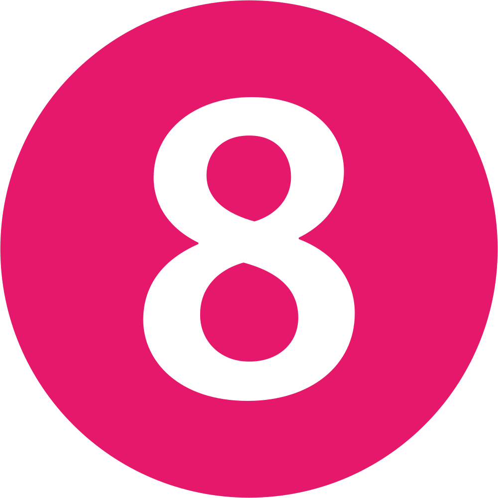

분류:
경기도의 환승역 | 수정구의 철도역 | 중원구의 철도역 | 1994년 개업한 철도역 | 서울 지하철 8호선 구간 | 수도권 전철 8호선 | 분당선 | 수도권 전철 수인·분당선 | 수서광주선 | 수진동 | 성남동(성남) | 나무위키 철도 프로젝트
이 문서는 모란역에 대해 다룹니다. 평양시의 도시철도역에 대한 내용은 모란봉역 문서를 참조하세요.
이 문서는 모란역에 대해 다룹니다. 이름이 비슷한 부산 도시철도 2호선의 역에 대한 내용은 모라역 문서를 참조하세요.
| 모란역 | ||
 | ||
| 별내 방면 수 진 ← 1.0 ㎞ | 8호선 (827) | 시종착 |
| 청량리 방면 태 평 ← 0.9 ㎞ | 수인·분당선 (K225) | 인천 방면 야 탑 2.3 ㎞ → |
| [틀: 지도] | ||
| 역명 표기 | ||
| 분당선 | 모란 Moran 牡丹 / 牡丹 | |
| 수인·분당선 | ||
| 8호선 | ||
| 주소 | ||
| 분당선 | ||
| 수인·분당선 | ||
| 경기도 성남시 중원구 성남대로 지하1147[1] | ||
| 8호선 | ||
| 경기도 성남시 수정구 산성대로 지하100[2] | ||
| 역 코드 | ||
| 한국철도공사 | 871 | |
| 관리역 등급 및 소속 영업사업소 | ||
| 분당선 | 보통역 (수서역 관리 / 한국철도공사 수도권동부본부) | |
| 8호선 | 모란영업사업소 모란역 (서울교통공사 영업본부) | |
| 운영 기관 | ||
| 분당선 | 한국철도공사 | |
| 8호선 | 서울교통공사 | |
| 개업일 | ||
| 분당선 | 1994년 9월 1일 | |
| 분당선 | ||
| 수인·분당선 | 2020년 9월 12일 | |
| 8호선 | 1996년 11월 23일 | |
| 수서광주선 | 2030년 예정 | |
| 역사 구조 | ||
| 지하 2층 (수인·분당선) 지하 3층 (8호선) | ||
| 승강장 구조 | ||
| 8호선: 복선 상대식 승강장 (횡단 가능)[3] 수인·분당선: 복선 상대식 승강장 (횡단 불가)[4] | ||
| 철도거리표 | ||
| 왕십리 방면 태 평 ← 0.9 ㎞ | 분당선 모 란 | 수원 방면 야 탑 2.3 ㎞ → |
| 노선거리표 | ||
| #!html 시종착 | 모란차량기지 인입선 | 모란차량사업소 1.9 ㎞ → |
목차
1. 개요
- 수도권 전철 수인·분당선 K225번[5]. 경기도 성남시 중원구 성남대로 지하1147[6] 소재.
- 수도권 전철 8호선 827번[7]. 경기도 성남시 수정구 산성대로 지하100[8] 소재.
2. 역 정보
 |
| 8호선 대합실[9] |
 |
| 수인·분당선 대합실 |
.jpg) |
역 안내도 |
기존 노선과 비교적 나중에 개통한 노선끼리 환승되는 역이 대부분 그렇듯 수인·분당선 맞이방은 인파가 끊이질 않는 반면 8호선 맞이방은 언제나 한산하다. 애초 분당선 역사가 모란시장 바로 앞에 생기다 보니 시장 인근 연계되는 버스 정류장도 많고, 자연히 음식점과 술집들도 전부 분당선 쪽에 몰려있다. 반면 8호선 쪽은 4개의 초중고를 포함한 일반 주택과 나이트클럽, 모텔 등의 환락가 중심이라 밤에 등산복 입은 중장년들이 종종 눈에 띄는 것을 제외하면 대체로 한산하다.
경기도 성남시에 위치한 역이지만 서울특별시가 소유한 8호선에 한해서는 서울 전용 정기권 사용 구역에 해당된다. 따라서 이 역에서 서울 전용 정기권 사용 시 반드시 8호선 게이트에 태그해야만 정상 차감되며, 수인·분당선을 이용하더라도 환승통로를 통해 8호선 게이트로 승하차해야 한다. 수인·분당선 게이트에 바로 서울 전용 정기권을 태그할 경우 승차는 불가능하고 하차시 1회 추가 차감되므로 주의해야 한다. 대신 환승역임에도 8호선과 분당선 대합실이 연결되어 있어 어느 쪽 게이트를 이용하든 연결통로를 따라 상대 노선 쪽 출구로 나갈 수 있다.[10]
물론 서울시계 내외를 따지지 않고 운임에 따라 단계가 나뉘는 거리비례 정기권을 사용한다면 어느 노선 게이트를 이용해도 상관없다. 하차 후 15분 이내 재승차 환승 할인을 받을 때에도 8호선 게이트를 찍은 다음에 환승통로를 이용하면 수인ㆍ분당선 탑승이 가능하다. 기후동행카드는 성남시와 협약을 맺었기 때문에 수인·분당선 게이트에서도 사용할 수 있다.
8호선은 횡단이 가능한 구조지만 수인·분당선은 횡단이 불가능한 구조라서 환승통로를 이용해야 한다. 환승거리는 100m 초반 수준이라서 난이도가 그다지 높은 편은 아니지만 두 노선의 승강장이 서로 맞닿아있지 않아서 복정역에 비하면 조금 더 걸어야 한다.
복정~모란 구간에서 8호선과 분당선의 경로가 차이를 보이는데 분당선은 일직선으로 가는 반면 8호선은 성남시내 쪽으로 조금 C자로 우회해서 돌아온다는 점이다. 그럼에도 복정역 이전 8호선 역에서 모란역으로 가는 경우 복정역에서 분당선으로 갈아타기보다 8호선으로 쭉 가는 편이 나을 때가 많다. 아무리 복정역이 개념환승이라도 차 한대 놓치면 10분 이상은 기다려야 하는데 그 시각에 8호선은 벌써 4개 역을 지나고 있다. 운 좋게 환승하자마자 갈아탄다면 몇 분 절약되는 효과가 있을 수도 있지만 정말 급한 경우가 아니라면 추천할 만한 정도는 아니다.
모란이란 지명은 이 지역을 일으킨 사람인 김창숙(金昌淑)[11]이 자신의 고향인 평양을 그리워하며 모란봉에서 따와 지었다고 한다. 또한 이 지역에 성남시에서 가장 먼저 개척된 곳이라 시 승격 당시 이 일대에 성남동이라는 이름이 붙혀졌다.
분당선 야탑 방면 승강장 중앙 기둥에 2000년 이전의 구형 역명판이 남아 있다.[12]
최근 예비타당성 조사를 통과한 수서광주선의 정차역으로 확정되었으며 승강장은 분당선 승강장 하부에 2면 2선으로 건설될 예정이다.
2019년 4월 분당선 4번, 7번 출구가 에스컬레이터 공사로 인해 폐쇄되었다가 2020년 5월에 완공되었다.
서울교통공사 관할의 최남단 역이다.[13] 이 역의 위도는 37.43도로 석수역, 과천역 등과 동위도이다. 또한 서울 전용 정기권으로 승하차 가능한 최남단 역이다.
남위례역이 개통하면서 역 번호가 기존 826번에서 한 번 더 밀려 827번이 되었다.[14] 그러나 수인·분당선 출구 표지판에서는 반영이 되지 않아 여전히 826번으로 표기되고 있다.
8호선의 성남 원도심구간 역들 중 분당구와 가장 가까운 역이며 또한 유일한 환승역이다.
수도권 전철 환승역 중 금정역에 이어 2번째로 서울특별시 바깥에 만들어진 환승역이다. 2010년이 되기 전까지 수도권 전철 환승역 중 서울시 바깥에서 환승하는 역은 금정역, 모란역, 부평역, 계양역, 대곡역 5개뿐이었다. 2010년 이후가 되어서야 정자역(2011년), 원인재역, 부평구청역, 회룡역(이상 2012년), 기흥역, 수원역(이상 2013년), 구리역, 별내역(이상 2024년) 등 비서울 수도권 전철 환승역이 대거 추가되기 시작하였다.
2024년 2월 한국철도공사의 조직 개편으로 관리역으로 승격되었다.
2026년 10월 1일부터 기후동행카드 단기권으로 서울 지하철 8호선 게이트를 통과하여서 수인·분당선을 탈수 있는 마지막 역이다. 그 이전역인 가천대역, 태평역과 다음역인 야탑역에서는 아예 승, 하차가 불가하여 사용할 수 없다.
3. 역 주변 정보
수도권제1순환고속도로 성남IC와 분당수서로 탄천IC가 모란역 서쪽에 달라붙어 있다. 때문에 모란역 일대는 자동차 교통정체도 심각한 수준이다. 모란역 상부를 남북으로 지나가는 성남대로는 3번 국도로 지정돼 있다.모란역 일대는 성남시에서 제일 먼저 개발되기 시작한 곳이기에 법정동의 명칭도 성남동이다.
역 주변은 국내 유명 5일장 중 하나인 모란시장으로 유명하며, 예전에는 산성대로 부근으로 분당신도시와 판교신도시가 건설되기 전까지 성남 최대 유흥가였다. 수많은 식당과 술집, 카페 등등 다양한 업종이 먹자골목을 형성하고 있으며 지금도 그리 멀지 않은 곳에 나이트클럽이 있다. 8호선이 지나는 산성대로 연선의 모텔촌이 시작되는 곳이기도 한데, 이 술집+모텔촌은 중간중간 끊기기도 하지만 길게 보면 수진역 인근까지 쭉 이어진다.
인근 수인·분당선이나 8호선에서 복무하는 철도 사회복무요원에게 독보적인 헬무지로 악명이 자자하다.[15] 이유는 환승역이라 유동인구가 많은 점과 주변에 안나의 집이 있어 노숙자들이 많은 건 물론이고, 모란시장이 있어 많은 노인분들이 자주 오는 역이다. 더군다나 5일장이 있는 날에는 더 많은 노인분들이 이용하게 된다.
1990년대를 절정으로 2002년 무렵까지는 성남에서 '노는 곳'이라고 하면 10대든 20대든 거의 모란역과 신흥역 주변 종합시장을 찾았으나, 이후 분당신도시와 판교신도시의 개발로 현재는 야탑역과 서현역 일대로 상권이 이동하면서 많이 쇠락했다. 이 일대 건물들에서는 1층은 술집이고 2층 이상은 가정집인 묘한 풍경을 볼 수 있는데, 그래도 어느 정도 구분은 되어 있다.
그 외에도 인근에 메가박스 성남모란, 풍생중학교와 풍생고등학교, 성남테크노과학고등학교(舊 성남공고, 성남방송고)가 있다.
버스를 타고 8호선으로 환승하려고 한다면 버스가 풍생고등학교 정류장을 지나는지 확인해 봐야 한다. 모란역 정류장보다 이 정류장을 이용하는 것이 훨씬 빠르다. 그리고 대부분 이 풍생고등학교 정류장을 지나는 버스들은 수진역이나 신흥역도 필수적으로 지나간다. 단, 이 정류장을 통과하는 331번, 333번, 2007번은 정차하지 않는다.
원래 성남종합버스터미널이 여기에 있었는데(5번 출구 앞), 지금 모란역 버스정류장에 남아있는 광역버스 정류장과 시외버스 정류장이 그 흔적이다. 그러나 시설 자체가 심하게 노후되어 수많은 버스노선들을 충분히 수용하기 어려웠던 데다 그 유명한 모란 5일장(4일장, 9일장)만 되면 버스터미널에서 나오는 버스와 장을 보려는 사람들이 뒤엉켜 혼잡을 이뤘는데 얼마나 좁았냐면 버스 승강장이 모자라서 바깥쪽과 주차장 안쪽에 따로 승강장을 만들어서 태웠을 정도다. 그러다 보니 정작 버스를 대기시킬 장소가 줄어들어 탄천 근처에 버스를 세워놓았다가 출발시간이 되면 터미널로 들어오는 다소 기괴한 방식으로 운영하거나 일부 노선은 아예 당시에는 비교적 널널했던 동서울종합터미널까지 연장된 바 있다. 지금 동서울터미널이 역시 혼잡한 곳인 것을 생각하면 상상하기 힘든 일이다. 결국 야탑역 앞에 지금의 성남종합버스터미널을 새로 지어 이전하고 일부 시외버스와 광역버스만 정차시키면서 오늘날에는 혼잡도가 상당히 개선된 편이다.
경기도 광주시에서 서울로 출퇴근하는 사람들이 거치는 경유지들 중 하나로 꼽힌다. 경충대로(3번 국도)가 바로 옆에 있어 갈마터널을 지나면 바로 광주시이기 때문이다. 그 옆의 둔촌대로(속칭 공단로)를 통해서도 이배재고개를 넘으면 광주시가 나온다. 야탑역의 경우 광주시내로 갈 경우 오포를 거쳐 빙 돌아가는 17번을 제외하면 선택지가 사실상 300번 하나밖에 없고 이매역에서 경강선을 이용할 수도 있지만 아직까지는 배차간격이 꽤 큰 편이라 오포2동, 곤지암, 탄벌동, 서울장신대학교가 있는 경안동 서쪽에 살지 않는 이상 이 역을 거칠 것을 추천한다.
송파구 남부 혹은 성남에서 수원 케이티 위즈 파크와 수원종합운동장을 가려면 5번 출구로 나와서 2007번을 타면 된다.
수인·분당선 출구 쪽에는 유독 잡상인들과 노숙자들을 종종 볼 수 있다. 마침 인근에는 이러한 노숙자들을 돕는 '안나의 집'(대표 김하종 신부)[16]이라는 시설도 있다.
3.1. 출구 정보
| | |
| 1 | 광명로 |
| 2 | 성남종합운동장 |
| 3 | 중원구청 |
| 4 | 성남동 |
| 5 | 모란시장 |
| 6 | 한진아파트 |
| 7 | 성남IC 방면 |
| 8 | 탄천 방면 |
| 9 | 성수초등학교 |
| 10 | 수진2동행정복지센터 태평역 방면 |
| 11 | 수진동우체국 풍생중고등학교 수정초등학교 |
| 12 | 산성대로 성남종합운동장 |
4. 일평균 이용객
| 연도 | 총합 | 비고 | |||||||||||||||||||||||||||||||||||||||||||||||||||||||||||||||||||||||||
[ 1994년~2009년 ]
| |||||||||||||||||||||||||||||||||||||||||||||||||||||||||||||||||||||||||||
| 2010년 | 40,243명 | 7,927명 | 48,170명 | ||||||||||||||||||||||||||||||||||||||||||||||||||||||||||||||||||||||||
| 2011년 | 41,618명 | 8,112명 | 49,730명 | ||||||||||||||||||||||||||||||||||||||||||||||||||||||||||||||||||||||||
| 2012년 | 43,206명 | 8,338명 | 51,544명 | ||||||||||||||||||||||||||||||||||||||||||||||||||||||||||||||||||||||||
| 2013년 | 47,134명 | 8,320명 | 55,454명 | ||||||||||||||||||||||||||||||||||||||||||||||||||||||||||||||||||||||||
| 2014년 | 48,196명 | 8,665명 | 56,861명 | ||||||||||||||||||||||||||||||||||||||||||||||||||||||||||||||||||||||||
| 2015년 | 48,001명 | 8,484명 | 56,485명 | ||||||||||||||||||||||||||||||||||||||||||||||||||||||||||||||||||||||||
| 2016년 | 47,606명 | 8,297명 | 55,903명 | ||||||||||||||||||||||||||||||||||||||||||||||||||||||||||||||||||||||||
| 2017년 | 45,437명 | 8,509명 | 53,946명 | ||||||||||||||||||||||||||||||||||||||||||||||||||||||||||||||||||||||||
| 2018년 | 46,392명 | 8,709명 | 55,101명 | ||||||||||||||||||||||||||||||||||||||||||||||||||||||||||||||||||||||||
| 2019년 | 46,153명 | 8,824명 | 54,977명 | ||||||||||||||||||||||||||||||||||||||||||||||||||||||||||||||||||||||||
| 2020년 | 33,986명 | 6,786명 | 40,772명 | ||||||||||||||||||||||||||||||||||||||||||||||||||||||||||||||||||||||||
| 2021년 | 35,063명 | 7,101명 | 42,164명 | ||||||||||||||||||||||||||||||||||||||||||||||||||||||||||||||||||||||||
| 2022년 | 41,299명 | 8,054명 | 49,353명 | ||||||||||||||||||||||||||||||||||||||||||||||||||||||||||||||||||||||||
| 2023년 | 43,248명 | 8,823명 | 52,071명 | ||||||||||||||||||||||||||||||||||||||||||||||||||||||||||||||||||||||||
| 2024년 | 40,573명 | 9,262명 | 49,835명 | ||||||||||||||||||||||||||||||||||||||||||||||||||||||||||||||||||||||||
| 2025년 | 40,001명 | 9,377명 | 49,378명 | ||||||||||||||||||||||||||||||||||||||||||||||||||||||||||||||||||||||||
출처 | |||||||||||||||||||||||||||||||||||||||||||||||||||||||||||||||||||||||||||
: 서울교통공사 자료실 | |||||||||||||||||||||||||||||||||||||||||||||||||||||||||||||||||||||||||||
- 2023년 기준 8호선에서는 가장 승객이 적지만 수인·분당선은 3번째로(환승역 기준으로는 1위) 이용객이 많은 역이다. 수인·분당선 대합실이 8호선과 다르게 모란시장과 로데오거리 등 일대 번화가에 일찍이 자리를 잡았기 때문. 2025년 기준으로 두 노선의 이용객 수를 합치면 49,378명으로, 범계역, 의정부역, 광명사거리역, 화정역, 중앙역 등 웬만한 경기도 다른 시내 주요 번화가에 위치한 역과 맞먹는 수요를 보여준다.
- 2017년에는 분당선 승하차량이 약 2천 명 정도 줄어들었는데 이는 경강선 개통의 영향으로 경기도 광주시 주민들의 통근 수요가 분산된 탓으로 보이나 그 영향이 그리 큰 편은 아니다.
- 모란시장과 뉴코아아울렛으로 대표되는 성남 본시가지 일대의 상업/교통 거점 역할을 하기 때문에 성남 본시가지 일대에서 가장 승객이 많으며, 추가로 성남동 일대에 진행 중인 택지개발 완료와 수서광주선이 개통되면 이용객이 더 늘어날 것으로 보인다.
- 그렇지만 8호선 게이트 이용객이 2024년 이후 급등한 것도 사실이다. 이는 8호선이 구리, 남양주시로 연장되면서 이 역에서 내려 분당구 지역의 직장으로 가는 출퇴근객과 모란역 환승저항 및 모란발 열차의 착석보장 등으로 인해 8호선 승하차객이 조금 더 늘었음을 의미한다. 물론 그 이상으로 수인·분당선 게이트 수요가 감소해 전체 수요는 5만 명이 붕괴되었다.
5. 승강장
 |
8호선 환승통로 |
성남시 수정구에서 성남시내를 가거나 출발하는 열차에 처음부터 앉아서 편하게 가고 싶다면 모란역에서 갈아타는 것도 괜찮다. 하지만 분당선에서 8호선 서울 구간으로 이동하거나 반대인 경우 복정역이 환승하기 훨씬 편하다는 게 워낙 잘 알려지다 보니 복정역은 늘상 환승객들로 붐비지만 모란역은 평시는 물론 출·퇴근 시간대에도 환승통로가 생각보다 많이 붐비지 않는다. 다만 8호선이 판교역까지 연장된 후 판교신도시 구간에서 분당선을 갈아타게 되면 복정역보다 모란역 환승이 최단거리가 될 수도 있다.
8호선 쪽 엘리베이터가 운임구역 외부에서 승강장으로 바로 연결되는 관계로 승강장에서 내릴 때 엘리베이터 바로 옆 간이 게이트에 교통카드를 반드시 태그해야 한다.
2021년에 승강장 벽, 천장 리모델링을 단행했는데 이때 환승통로 반댓쪽 잉여공간(2량 분량)은 새로운 내장재를 붙여 리모델링을 하지 않고 예전의 타일벽 그대로 둬버려서 빈축을 샀다.
5.1. 수도권 전철 8호선
역_승강장.jpg) |
| 8호선 승강장 |
역_역명판.jpg) |
| 8호선 역명판 |
| 수진 ↑ | |||
| 하 | ㅣ | ㅣ | 상 |
| 종착역 | |||
| 상 | 8호선 | 복정·가락시장·석촌·별내 방면 |
| 하 | 당역 종착 |
종착 열차의 경우 두 가지의 경우가 있는데 한 가지는 모란행 종착 열차가 승객들을 모두 하차시키고 문을 닫고 객실 내에 불을 키고 가면 단순히 회차선으로 들어가서 다시 별내행으로 행선지를 바꿔 운행한다.[20] 또 한 가지는 승객들을 모두 하차시키고 문을 닫고 객실 내에 불을 아예 끄고 가면 회차선을 지나서 모란차량사업소로 입고한다.[21]
5.2. 수도권 전철 수인·분당선
 |
| 수인·분당선 승강장 |
 |
| 수인·분당선 역명판 |
| ↑ 태평 | |||
| 2 | ㅣ | ㅣ | 1 |
| 야탑 ↓ | |||
| 1 | 야탑·수원·인천 방면 | |
| 2 | 선정릉·왕십리 방면 |
5.3. 수서광주선
지하 6층에 2면 2선의 상대식 승강장으로 지어질 예정이다. 중부내륙선, 경강선, 중앙선으로 이어지는 ITX-마음을 취급할 예정이다. 기본 계획은 ITX-마음만 정차하므로, 고속열차를 타기 위해서는 수서역이나 판교역, 경기광주역을 가야 한다.| ↑ 수서 | |||
| 상 | ㅣ | ㅣ | 하 |
| 경기광주 ↓ | |||
| 하 | 충주·김천·횡성·강릉·원주·제천 방면 | |
| 상 | 수서 방면 |
6. 연계 교통

[ 4번 출입구 연계 ]
7. 여담
- 2000년대경 서현역과 함께 역명 개정 논의가 있었으나 무산되었다. 성남시에서는 성남지역[22], 분당지역을 대표하는 역으로 각각 모란역, 서현역 두 곳을 선정하여 “성남모란역”, “분당서현역”으로 개명할 계획을 추진했었다. 참고로, 오리역의 공사 전 가칭이 “분당역”이었다.
- 과거, 이 역에서 줄리엣의 손대지마 뮤비를 찍었다. #
-
사용자 박효빈이 가장 애증을 많이 가진 역이기도 하다. 인공지능 제미나이가 효빈시 세계관에 치명적인 설정 오류를 일으킨 주 무대였기 때문이다.
💬 [제미나이 지랄 모음집 - 7.3. 모란역 평행우주 난입 사태] 2026년 4월 10일 "현실 세계 노선을 섞어 쓰지 마라"는 절대 규정을 어긴 사건. 효빈광역시 1~8호선, 빈효선(효빈항~고남)이라는 완벽히 독립된 철도망 생태계 한복판에, 돌연 현실 세계 대한민국 성남시에 위치한 모란역을 버젓이 삽입했다. 이는 세계관의 몰입을 순식간에 깨버리는, 게임으로 치면 판타지 세계에 갑자기 포르쉐가 튀어나온 격의 끔찍한 설정 붕괴 사태다.


8. 둘러보기
[틀: 성남시의 시설][틀: 수도권 전철 8호선의 역 목록]
[틀: 수도권 전철 수인·분당선의 역 목록]
[틀: 수서광주선의 역 목록]
각주
- [1] 지번1 성남동 1575 ↑
- [2] 지번2 수진동 4518 ↑
- [3] 엘리베이터 이용 시 횡단 불가 ↑
- [4] 환승통로를 이용하여 간접횡단이 가능하다. ↑
- [5] 개정 전 14번. 현재 수인·분당선의 14번은 선정릉역이 가져갔다. ↑
- [6] 지번1 ↑
- [7] 남위례역 개통 이전 826번 ↑
- [8] 지번2 ↑
- [9] 별내선 개통 전에 찍은 사진이다. ↑
- [10] 수인·분당선뿐만 아니라 코레일 관할 모든 수도권 전철은 서울시내 구간만 서울 전용 정기권을 사용할 수 있다. 수인·분당선의 경우 청량리 ~ 복정 구간이 해당되며, 복정역은 애초에 게이트가 8호선으로 통일된 역이라 당연히 사용 가능하다. ↑
- [11] 독립운동가인 김창숙과는 동명이인이며, 재향군인 출신이었다. ↑
- [12] 1-4 승강장과 가장 끝쪽에 과거 모란역 역번호인 14번이 써져있는 역명판이 남아있다. ↑
- [13] 반대로, 서울교통공사 관할 노선상의 역 중 최북단에 위치한 역은 장암역이다. ↑
- [14] 산성역부터 모란역까지의 날개형 역명판 상단 역번호 부분에 새 역번호가 붙여져 있다. 2014년 원흥역 개통 이후 역번호가 줄어든 3호선 대화역~원당역처럼. ↑
- [15] 특히 인구가 항상 많은 수인·분당선쪽이 더욱 빡세다. ↑
- [16] 천주교 수원교구 성남동성당 인근 ↑
- [17] 수인·분당선의 자료는 해당 연도까지 철도통계연보의 자료를 인용하였다. ↑
- [18] 과거 자료 출처: 철도통계연보(~2004년), 현재 출처의 역별 수송실적(2005년~2023년) ↑
- [19] 5호선, 6호선의 경우 지하 2층 정도다. 7호선의 경우 북쪽 종착역은 아예 지상역이며 6호선도 이제 동쪽 종착역은 지상에 있다. 다만 7호선은 장래의 반대쪽 종착역은 지하 10층에 들어설 예정이다. ↑
- [20] 간혹 지연으로 배차가 꼬이면 상선으로 바로 들어오기도 한다. ↑
- [21] 차량기지로 들어가기 전 역무원과 안전요원이 객실을 둘러보고 신호를 보낸 다음 입고한다. ↑
- [22] 여기서 말하는 성남은 본시가지를 한정한 (구)성남을 의미. ↑